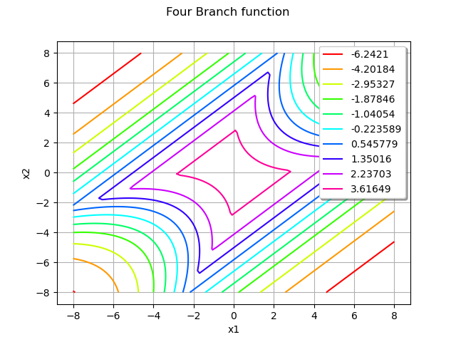
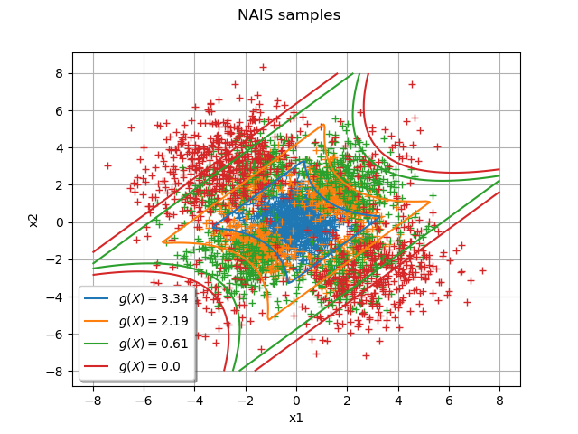
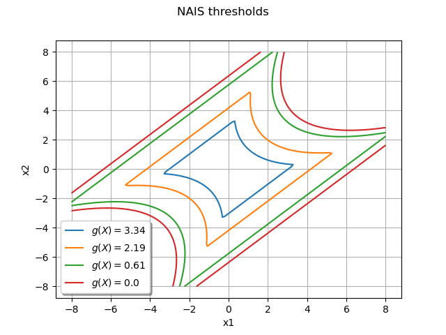

Note
Go to the end to download the full example code
Non parametric Adaptive Importance Sampling (NAIS)¶
The objective is to evaluate a probability from the Non parametric Adaptive Importance Sampling (NAIS) technique.
We consider the four-branch function  defined by:
defined by:
![\begin{align*}
g(\vect{X}) = \min \begin{pmatrix}5+0.1(x_1-x_2)^2-\frac{(x_1+x_2)}{\sqrt{2}}\\
5+0.1(x_1-x_2)^2+\frac{(x_1+x_2)}{\sqrt{2}}\\
(x_1-x_2)+ \frac{9}{\sqrt{2}}\\
(x_2-x_1)+ \frac{9}{\sqrt{2}}
\end{pmatrix}
\end{align*}]()
and the input random vector  which follows the standard 2-dimensional Normal distribution:
which follows the standard 2-dimensional Normal distribution:
![\begin{align*}
\vect{X} \sim \mathcal{N}(\mu = [0, 0], \sigma = [1,1], corr = \mat{I}_2)
\end{align*}]()
We want to evaluate the probability:

First, import the python modules:
import openturns as ot
from openturns.viewer import View
import math
Create the probabilistic model  ¶
¶
Create the input random vector  :
:
X = ot.RandomVector(ot.Normal(2))
Create the function  from a
from a PythonFunction:
def fourBranch(x):
x1 = x[0]
x2 = x[1]
g1 = 5 + 0.1 * (x1 - x2) ** 2 - (x1 + x2) / math.sqrt(2)
g2 = 5 + 0.1 * (x1 - x2) ** 2 + (x1 + x2) / math.sqrt(2)
g3 = (x1 - x2) + 9 / math.sqrt(2)
g4 = (x2 - x1) + 9 / math.sqrt(2)
return [min((g1, g2, g3, g4))]
g = ot.PythonFunction(2, 1, fourBranch)
Draw the function to help to understand the shape of the limit state function:
graph = ot.Graph("Four Branch function", "x1", "x2", True, "topright")
drawfunction = g.draw([-8] * 2, [8] * 2, [100] * 2)
graph.add(drawfunction)
view = View(graph)

In order to be able to get the NAIS samples used in the algorithm, it is necessary to transform the PythonFunction into a MemoizeFunction:
g = ot.MemoizeFunction(g)
Create the output random vector :
Y = ot.CompositeRandomVector(g, X)
Create the event  ¶
¶
threshold = 0.0
myEvent = ot.ThresholdEvent(Y, ot.Less(), threshold)
Evaluate the probability with the NAIS technique¶
quantileLevel = 0.1
algo = ot.NAIS(myEvent, quantileLevel)
Now you can run the algorithm.
algo.run()
result = algo.getResult()
proba = result.getProbabilityEstimate()
print("Proba NAIS = ", proba)
print("Current coefficient of variation = ", result.getCoefficientOfVariation())
Proba NAIS = 6.277611475704379e-06
Current coefficient of variation = 0.11147390478508908
The length of the confidence interval of level  is:
is:
length95 = result.getConfidenceLength()
print("Confidence length (0.95) = ", result.getConfidenceLength())
Confidence length (0.95) = 2.7431258600605445e-06
which enables to build the confidence interval:
print(
"Confidence interval (0.95) = [",
proba - length95 / 2,
", ",
proba + length95 / 2,
"]",
)
Confidence interval (0.95) = [ 4.9060485456741064e-06 , 7.649174405734652e-06 ]
Draw the NAIS samples used by the algorithm¶
The following manipulations are possible only if you have created a MemoizeFunction that enables to store all the inputs and outputs of the function .
Get all the inputs and outputs where were evaluated:
inputNAIS = g.getInputHistory()
outputNAIS = g.getOutputHistory()
nTotal = inputNAIS.getSize()
print("Number of evaluations of g = ", nTotal)
Number of evaluations of g = 4000
Within each step of the algorithm, a sample of size  is created, where:
is created, where:
N = algo.getMaximumOuterSampling() * algo.getBlockSize()
print("Size of each subset = ", N)
Size of each subset = 1000
You can get the number  of steps with:
of steps with:
Ns = int(nTotal / N)
print("Number of steps = ", Ns)
Number of steps = 4
Now, we can split the initial sample into NAIS samples of size :
listNAISSamples = list()
listOutputNAISSamples = list()
for i in range(Ns):
listNAISSamples.append(inputNAIS[i * N: i * N + N])
listOutputNAISSamples.append(outputNAIS[i * N: i * N + N])
And get all the levels defining the intermediate and final thresholds given by the empirical quantiles of each NAIS output sample:
levels = []
for i in range(Ns - 1):
levels.append(listOutputNAISSamples[i].computeQuantile(quantileLevel)[0])
levels.append(threshold)
The following graph draws each NAIS sample and the frontier  where
where  is the threshold at the step
is the threshold at the step  :
:
graph = ot.Graph("NAIS samples", "x1", "x2", True, "bottomleft")
graph.setGrid(True)
Add all the NAIS samples:
for i in range(Ns):
cloud = ot.Cloud(listNAISSamples[i])
graph.add(cloud)
col = ot.Drawable().BuildDefaultPalette(Ns)
graph.setColors(col)
Add the frontiers where is the threshold at the step :
gIsoLines = g.draw([-8] * 2, [8] * 2, [128] * 2)
dr = gIsoLines.getDrawable(2)
for i, lv in enumerate(levels):
dr.setLevels([lv])
dr.setLineStyle("solid")
dr.setLegend(r"$g(X) = $" + str(round(lv, 2)))
dr.setLineWidth(3)
dr.setColor(col[i])
graph.add(dr)
# sphinx_gallery_thumbnail_number = 2
view = View(graph)

Draw the frontiers only¶
The following graph enables to understand the progression of the algorithm from the mean value of the initial distribution to the limit state function:
graph = ot.Graph("NAIS thresholds", "x1", "x2", True, "bottomleft")
graph.setGrid(True)
dr = gIsoLines.getDrawable(0)
for i, lv in enumerate(levels):
dr.setLevels([lv])
dr.setLineStyle("solid")
dr.setLegend(r"$g(X) = $" + str(round(lv, 2)))
dr.setLineWidth(3)
graph.add(dr)
graph.setColors(col)
view = View(graph)
